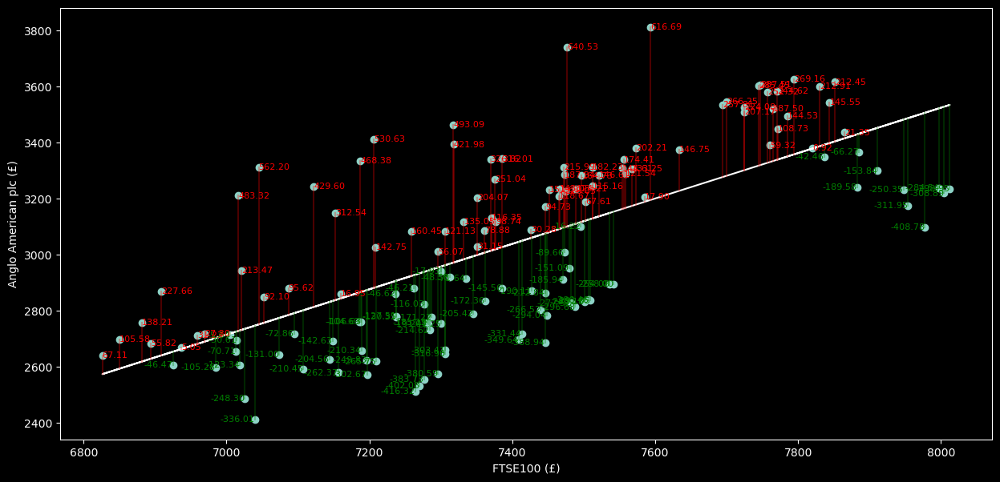
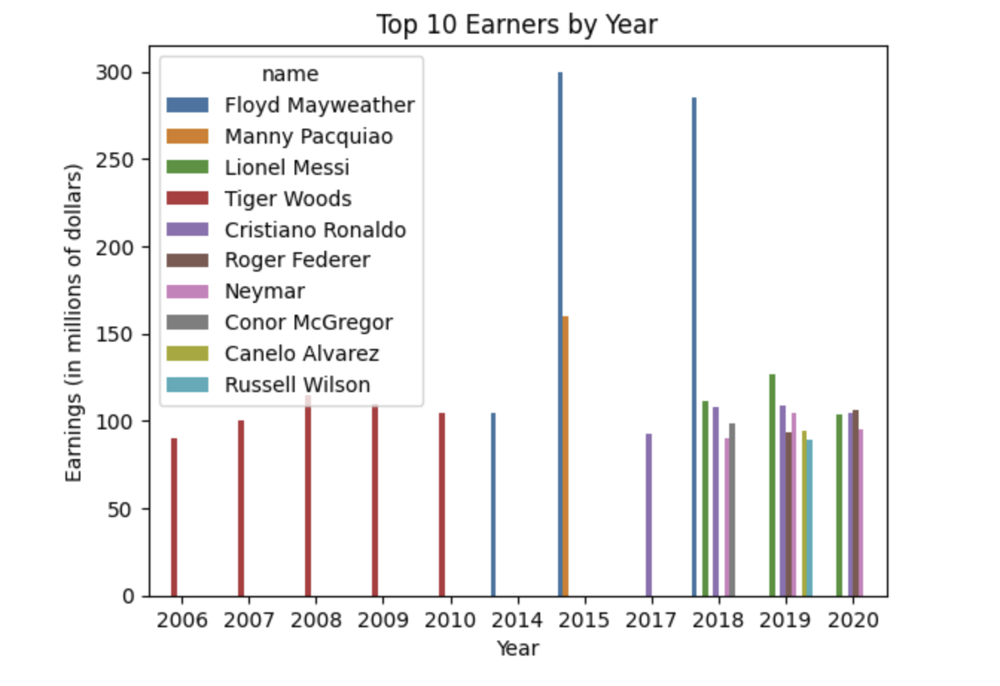
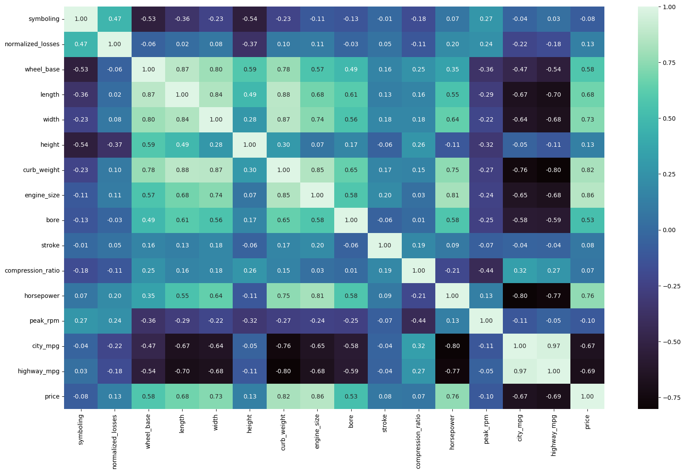
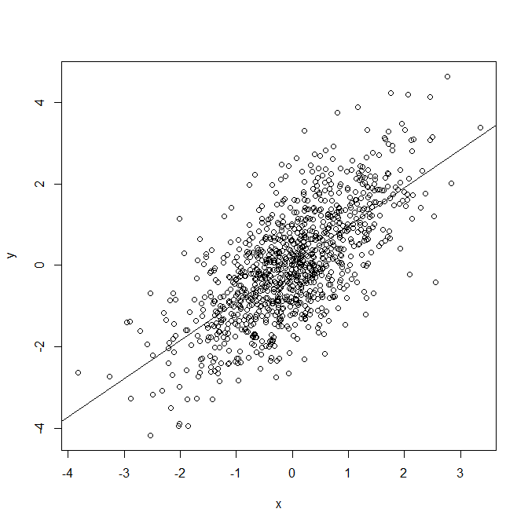
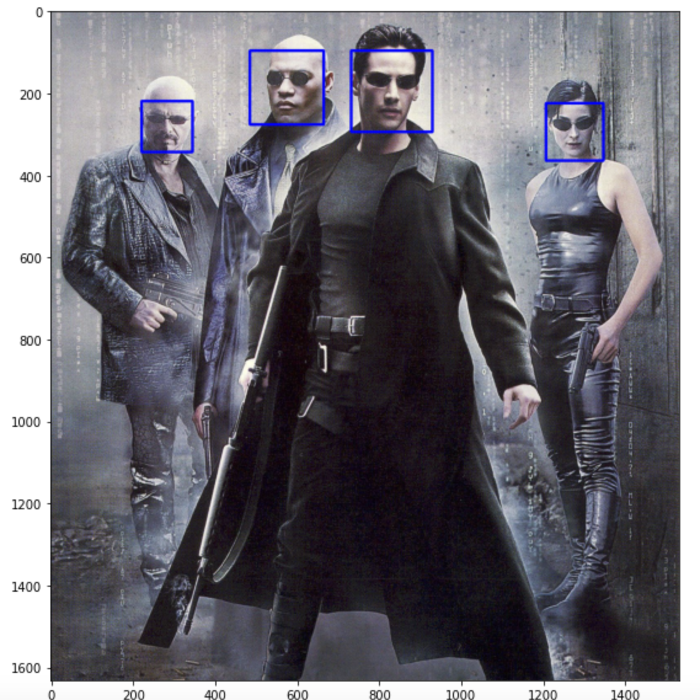

Data visualization is a crucial aspect of data analysis as it helps to make complex information easily understandable.
As a Data Analyst, I understand the importance of presenting data in a visually appealing and interactive manner, which can effectively communicate insights and patterns in the data.
With my expertise in tools such as Matplot and Seaborn.
I'd be happy to tell you a story about cooking a linear regression model. Let's imagine you are a chef who wants to create a delicious dish using linear regression as the main ingredient.
"One day, I embarked on a new journey to apply my data visualization expertise to the realm of marketing.
After countless hours of research and analysis, I meticulously selected the best data points to build my linear regression model.
I drew upon the knowledge I had gained from reading articles, researching previous studies, and delving into the intricacies of machine learning algorithms.
Just like a chef carefully balances the flavours in a dish, I carefully balanced the data points in my model, using machine learning algorithms to create the perfect fit line.
The result was a machine learning model which could accurately predict marketing trends and help organisations make informed decisions.
Through this process, my skills in data visualization and machine learning have grown, much like my culinary skills have improved over time.
The result is a machine learning model that is a true masterpiece, delivering accurate insights to organizations seeking to drive growth and success.
So, whether I am cooking up a delicious dish or creating a dynamic data visualization, I approach each project with the same passion and attention to detail, always striving for excellence and the perfect result."

FINANCIAL ANALAYSIS ON FTSE100 & ANGLO AMERICAN PLC USING MACHINE LEARNING
This is the reason why I place a strong emphasis on data visualization. Proper visualization can greatly enhance the understanding of the data, making it easier to identify patterns and insights. That's why I am strict when it comes to visualizing data and strive to make it as clear, attractive, and informative as possible.

Data Visualizations of the Forbes highest-paid athletes 1990-2020 using Python and Pandas.
Whether you're a sports fan, finance enthusiast, or simply interested in the power of data visualization, my report provides valuable insights and inspires you to explore the world of data analysis further.

The analysis of automobile industry data provides a window into the trends and patterns shaping the future of transportation.
This report provides a comprehensive analysis of the automobile industry through a variety of data visualization techniques, including scatter plots, bar graphs, correlation maps, catplots, and boxplots.

In this report, I showcase my mastery of advanced statistics and Python programming through the design of my own machine learning linear regression model.
Exploring the Impact of Layoffs on Meta's Workforce through yfinance Api. The report provides a comprehensive analysis of Meta's workforce changes and its impact on the company's market capitalisation
Whether you're a database administrator, IT professional, or simply interested in SQL, my work provides valuable insights and important area of data management.

The Harr-Cascade Classifier has been widely adopted in a variety of applications, including security systems, biometric identification, and human-computer interaction. It is a popular choice due to its robustness, accuracy, and speed in detecting faces and facial features.
A customer report data analysis is a comprehensive analysis of a customer's information, which includes various demographic, financial, and behavioral data. The above listed information is commonly included in a customer report and can provide valuable insights into the customer's lifestyle, spending habits, and financial standing.
For example, the customer's address, age, employer, and marital status can give an idea of their demographic profile and help in segmenting the customers based on their characteristics.
The information about the credit card, bank IBAN, and yearly salary can be used to understand the customer's spending habits and financial status. The information about the distance commuted to work, dependants, and pension can give an idea of the customer's income and expenses.
(download dataset)

Tableau is a powerful data visualization tool that helps organizations turn their data into meaningful insights. With Tableau, you can easily connect to various data sources, create stunning visualizations, and share your insights with others.
Tableau provides an intuitive drag-and-drop interface for creating charts, graphs, maps, and other types of visualizations. You can also perform complex calculations and data manipulations with just a few clicks. Tableau supports real-time data updates, so your visualizations always reflect the latest information.
One of the key benefits of using Tableau is its ability to help you discover patterns and relationships in your data. With its advanced analytics capabilities, you can uncover insights that would be difficult to detect through manual analysis. Tableau also makes it easy to share your visualizations with others, so you can collaborate with your team and stakeholders to make data-driven decisions.
Whether you are a business analyst, data scientist, or simply someone who wants to make sense of your data, Tableau is a tool that can help you achieve your goals. With its user-friendly interface and robust features, Tableau makes data visualization accessible to everyone.

Human resources (HR) play a crucial role in any organization, as they are responsible for managing the people who make up the company. From hiring and training employees to managing benefits and resolving conflicts, HR professionals are the backbone of a healthy and productive workplace.
One of the main responsibilities of HR is to attract and retain top talent. This involves developing a strong company culture, offering competitive compensation and benefits packages, and creating opportunities for professional growth and development. A strong HR team can help an organization attract and retain top talent, which is essential for long-term success.
Another important role of HR is to manage employee relations. This includes addressing conflicts and grievances, maintaining a positive work environment, and promoting open communication between employees and management. By fostering a positive and inclusive workplace culture, HR can help prevent workplace stress and burnout, which can lead to decreased productivity and increased turnover.
HR is also responsible for ensuring that the organization complies with all relevant employment laws and regulations. This includes keeping up to date on changes in labor laws, developing and implementing company policies, and handling all legal issues related to the workplace.
In addition to these traditional HR functions, many organizations are now recognizing the importance of employee wellness and work-life balance. HR can play a key role in promoting these initiatives by offering flexible work arrangements, promoting healthy habits, and providing resources to help employees manage stress and maintain a healthy work-life balance.